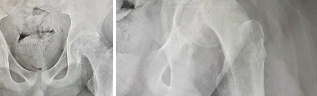

Hallazgo del meta-análisis; limitado por heterogeneidad y tamaño de los estudios.
Dolor nocturno idiopático de miembros inferiores en niños
Francisco Javier García Folleco
Un niño con dolor de piernas por la noche: ¿benigno o hay algo más?
El “dolor de crecimiento” es muy frecuente, pero se diagnostica por exclusión y casi sin guías. Esa tensión ordena toda la presentación.
Muy frecuente
Una de las causas más comunes de dolor musculoesquelético recurrente en la infancia
Aunque se considera benigno, puede causar ansiedad familiar y alterar el sueño y la calidad de vida.
Sin estándar de oro
El diagnóstico es clínico y por exclusión
No existe una prueba ni un criterio único; la literatura usa 15 criterios diferentes.
Sin guías
No hay guías para orientar el examen que excluye otras causas
Un panel Delphi australiano lo priorizó entre las 10 condiciones que necesitan guías de práctica clínica.
Qué es… y por qué el nombre engaña
Descripción clínica
Dolor benigno, bilateral e intermitente en los músculos o alrededor de las articulaciones de los miembros inferiores, sin anomalías en el examen físico ni en el laboratorio.
Nombres que verás en la literatura
Growing pains · Growth pain disorder · Benign nocturnal limb pains · Dolor recurrente de extremidades
No hay evidencia de asociación con el crecimiento rápido, como se creía originalmente.
Clasificación internacional
CIE-10
No lo reconoce como entidad: lo codifica como síntoma musculoesquelético inespecífico.
CIE-11
SE32
“Growth pain disorder”: entidad propia con código único.
El problema: no hay un criterio único
61
estudios incluidos en la revisión
15
criterios diagnósticos distintos
7 992
niños con “growing pains” analizados
Los criterios se solapan, a veces se contradicen y casi nunca se aplican igual.
Frecuente, pero con cifras que van del 2,6 % al 36,9 %
La enorme dispersión refleja diferencias de edad, país, ámbito y, sobre todo, de definición.
≈4,7%
estimación “conservadora” de prevalencia
≈2%
prevalencia del síndrome de piernas inquietas pediátrico
En deportistas jóvenes (8–17 años, n = 916)
- Dolor musculoesquelético autorreportado: 78,5 % en niños y 93,5 % en adolescentes.
- Diagnóstico formal de dolores de crecimiento: 32,6 % y 51,9 %. Solo 13,7 % usaba analgésicos.
En Colombia no hay cifras propias de dolores de crecimiento
Desde 2025 no encontramos ningún estudio colombiano de prevalencia. Por eso se usan, como excepción de fecha, tres fuentes colombianas anteriores a 2025.
Qué encontramos (2025–2026)
- Ninguno de los 37 estudios del meta-análisis de 2026 es colombiano; el único latinoamericano es de México.
- Nuestra búsqueda en PubMed (noviembre de 2026) de dolores de crecimiento en Colombia, 2025–2026, no arrojó estudios.
- La CIE-10, con la que se registra el diagnóstico en la historia del caso de ronda, no tiene código propio: la consulta inicial se codificó como dolor en miembro (M79.6). La CIE-11 sí lo tiene (SE32).
Fuentes colombianas anteriores a 2025
- Bucaramanga, 2007 (n = 468, edad media 13,8 años): dolor musculoesquelético el día de la encuesta en el 54 % (IC 95 %: 47,1–61,0). No estudió el dolor de crecimiento en particular.
- Revisión de la Universidad Nacional, 2008: describe el cuadro en niños de 4 a 12 años, con dolor vespertino o nocturno y examen normal, y cita prevalencias internacionales de 2,6 % a 49,4 %.
- Revisión de medicina física, 2017: como motivo de consulta, entre el 4 y el 6 % en mayores de 3 años y hasta el 12 % entre los 11 y 14 años. Son cifras que la revisión toma de la literatura internacional.
Origen multifactorial: muchas asociaciones, ninguna causa demostrada
IC 95 %: −0,12 a −0,02 (p = 0,008). Diferencia pequeña; no prueba que el hueso cause el dolor.
Pero un caso-control de 2025 no halló diferencia con controles. Ver la diapositiva siguiente.
Hipermovilidad articular y sobreactividad son más frecuentes en niños con dolores de crecimiento.
Una revisión reporta antecedente familiar positivo en 44,2 % de niños con dolores de crecimiento frente a 14,5 % en síndrome de piernas inquietas; no hay estudios de genoma completo.
Disfunción serotoninérgica, déficit de hierro y vitamina D baja se proponen en ambas; algunos autores lo consideran un equivalente migrañoso.
La evidencia sigue siendo limitada y se necesitan más estudios.
El nombre “dolor de crecimiento” no tiene respaldo en estos datos.
Vitamina D: tres estudios, tres mensajes
La asociación existe en el agregado, pero no se sostiene en todos los diseños y el único estudio de tratamiento no tiene grupo control.
Meta-análisis (2026): 25(OH)D más baja en niños con dolores de crecimiento
Los propios autores piden cautela por heterogeneidad y tamaño muestral.
Caso-control (2025): sin diferencia entre casos y controles
Los niños con vitamina D suficiente mejoraron igual que los que recibieron suplemento.
Estudio abierto (2025): mejoría tras suplementar, pero sin control
70%
normalizó la 25(OH)D
70%
quedó con dolor leve
n = 30, D3 2 000 UI/día por ≥12 semanas. Al inicio: 43,3 % dolor severo y 53,3 % moderado.
Lectura: la hipovitaminosis D es frecuente también en niños sin dolor, no hay evidencia causal y falta un ensayo aleatorizado. Se necesita más investigación antes de afirmar que suplementar trata el cuadro.
Factores asociados: sueño, fatiga y actividad física
Caso-control con 290 niños con dolores de crecimiento y 467 controles, más el meta-análisis.
Asociación no es causalidad. Son estudios observacionales con cuestionarios a los padres; el OR de 15,6 para fatiga extrema es una estimación que debe leerse con cautela.
Qué se asoció
- Más riesgo: latencia de sueño de 30–60 min, fatiga extrema tras el ejercicio y humo de tabaco materno casi diario en el embarazo.
- Menos riesgo: preferencia por legumbres y por los deportes.
El perfil típico: bilateral, vespertino y con examen normal
Lo que se espera encontrar
- Edad: 3 a 12 años
- Patrón: intermitente, 1–2 veces por semana, rara vez a diario; sin dolor entre episodios
- Duración: cada episodio dura de 30 min a 2 h
- Sitio: muslos anteriores, huecos poplíteos o pantorrillas; ambos miembros, fuera de las articulaciones
- Horario: inicia al final del día o de noche y desaparece por la mañana
- Examen: normal, sin limitación de la actividad física ni cojera
Frente a otros dolores de pierna (n = 201, 3–12 años)
En el estudio, el 89,55 % de los niños con dolores de crecimiento tenía molestia vespertina/nocturna; el grupo con enfermedad orgánica refería más dolor matutino y punzante (40,3 %).
Los niños con dolores de crecimiento duermen peor
Estudio transversal de 138 niños de 4–12 años (71 con dolores de crecimiento y 67 controles).
49 vs 42
puntaje total mediano del cuestionario de hábitos de sueño (CSHQ), p < 0,001
p = 0,53
la ansiedad materna (GAD-7) no difirió entre grupos
Qué implica
- Dentro del grupo con dolor, mayor intensidad se asoció con peor sueño.
- En otro estudio, tardar 30–60 min en dormirse se asoció con más dolores de crecimiento (OR 3,7).
- Se sugiere evaluar el sueño en estos niños.
Aun así, las revisiones señalan que casi ningún estudio mide el efecto del dolor y de los tratamientos sobre el sueño, la actividad y la escuela.
Diagnóstico clínico, por exclusión y sin criterio único
Criterios operativos usados en un estudio de 2026
Se requieren al menos 4 de 7 ítems y examen, laboratorio e imagen normales, edad de 3 a 18 años.
- Dolor tardío o nocturno que desaparece por la mañana.
- Intermitente, con días y noches sin dolor.
- Distribución típica: muslo anterior, pantorrilla, hueco poplíteo.
- Habitualmente en ambas piernas.
- Fuera de la región articular.
- Sin limitación de la movilidad ni cojera.
- Sin trauma, infección, sensibilidad, eritema ni edema locales.
Además, el protocolo exigía excluir inflamación, enfermedad reumatológica, tumor o fractura con historia, examen, laboratorio e imagen.
La CIE-11 le da código propio (SE32); la CIE-10 no. Sin criterios explícitos: 23,3 % de los registros (14/60). Una prueba de esfuerzo estandarizada mostró patrones distintos de recuperación del dolor, pero no diferenció con fiabilidad el dolor de crecimiento del orgánico.
El gran imitador: síndrome de piernas inquietas (SPI)
Comparten edad, horario y patrón intermitente. No son intercambiables, y la evidencia no permite aún clasificarlos como una sola entidad.
| Característica | Dolor de crecimiento | SPI pediátrico |
|---|---|---|
| Inicio | Entre 3 y 12 años en ambos | |
| Horario | Empeora por la tarde o la noche | |
| Curso | Intermitente; alivio con movimientos gruesos | |
| Examen | Sin limitación funcional ni hallazgos objetivos | |
| Qué se siente | Exclusivamente dolor | Dolor u otras sensaciones desagradables (hormigueo, inquietud) |
| Necesidad de mover las piernas | Ausente | Característica central |
| Efecto del movimiento | No es el rasgo principal | Alivia parcial o totalmente mientras dura |
| Lateralidad | Clásicamente bilateral | Puede ser unilateral o bilateral |
| Otras regiones | No | Puede afectar brazos u otras zonas |
| Síntomas matutinos | No | Posibles |
Los ítems verdes orientan a dolor de crecimiento y los rojos a SPI. El SPI pediátrico ronda el 2 % y se asocia a enfermedad renal crónica, celiaquía, migraña y esclerosis múltiple de inicio pediátrico; su diagnóstico exige historia, examen y laboratorio.
Banderas rojas: cuándo NO es dolor de crecimiento
Marca lo que encuentres en tu paciente. Es una herramienta pedagógica construida con la literatura de esta presentación; no es una escala validada.
Banderas marcadas
0
El sesgo cognitivo también es una bandera. En una serie de casos, una enfermedad celiaca, un síndrome compartimental crónico y una masa vertebral se atribuyeron inicialmente a dolores de crecimiento por sesgo de anclaje y de confirmación.
Tres imitadores que no se pueden perder
Leucemia aguda
El dolor musculoesquelético puede ser el único síntoma inicial.
35%
con hemograma normal al inicio (7/20)
17días
mediana hasta el diagnóstico (rango 1–53)
Un hemograma normal no debe retrasar la evaluación oncológica si la clínica y la RM son sugestivas.
Osteoma osteoide de cadera
Serie de 18 pacientes con dolor de cadera.
83%
con dolor nocturno
12meses
mediana hasta el diagnóstico
El 50 % necesitó más de 5 consultas. Dolor de más de 3 semanas amerita evaluación adicional.
Hipoparatiroidismo
Niña de 11 años con 3 semanas de dolor bilateral de piernas, parestesias y fatiga.
995U/L
CK elevada
↓
calcio total e iónico bajos
Ante mialgias agudas o CK elevada inexplicada, medir calcio y PTH.
Tratamiento sintomático, con evidencia débil
Una vez excluidas otras causas, el manejo habitual es confortar, dar masaje local durante los episodios y analgesia sintomática. No hay ensayos robustos que validen su eficacia.
Explicar, tranquilizar y acompañar
Masaje local y analgesia puntual durante los episodios. Entre deportistas jóvenes solo el 13,7 % usaba analgésicos.
Estiramientos y medidas no farmacológicas
Una revisión recoge un ensayo aleatorizado antiguo a favor de los estiramientos, aunque rara vez se recomiendan en la práctica.
Vitamina D
Mejoría en un estudio abierto sin control, pero sin diferencia entre niños suplementados y no suplementados en otro.
Plantillas plantares personalizadas
647 niños evaluados y 178 reevaluados; mayor alivio con mejor cumplimiento. Diseño observacional: no confirma causalidad.
Derivar ante cualquier bandera roja
Cojera, dolor unilateral o diurno, examen o estudios anormales: pasar a estudio dirigido. Ver diapositiva de banderas rojas.
“Dolores de crecimiento” que eran un tumor óseo multifocal
- Presentación
Niña previamente sana, en la mitad de la infancia, con dolor y cojera en la pierna derecha de 1 mes de evolución.
- Etiqueta inicial
Se diagnosticó “dolores de crecimiento”.
- Radiografía
Radiografías de miembros inferiores: múltiples lesiones líticas.
- RM de cuerpo entero
Lesiones multifocales en los huesos de ambos miembros inferiores.
- Biopsia
Hemangioma epitelioide multifocal: neoplasia localmente agresiva que requiere manejo multidisciplinario continuo.

Radiografías del caso
Mostraron múltiples lesiones líticas en los huesos de los miembros inferiores. Las imágenes están en el artículo original (BMJ Case Reports, acceso restringido) y no se reproducen aquí. Ver las imágenes en el artículo.
Qué no encajaba con dolor de crecimiento
- Cojera (el examen debe ser normal y sin limitación).
- Unilateral (el cuadro típico es bilateral).
- Dolor persistente durante un mes (el típico es intermitente).
Lección: una radiografía cambió el diagnóstico. Es fácil recurrir a la etiqueta de “dolor de crecimiento”: es un diagnóstico de exclusión, no un descarte rápido.
Una cojera de meses que era una epifisiolisis femoral
- Presentación
Varón de 16 años con cojera persistente de varios meses.
- Estudios previos
Se buscaron causas ortopédicas, infecciosas e inflamatorias y aparentemente no hubo hallazgos; fue derivado a reumatología.
- Diagnóstico
Se identificó una epifisiolisis femoral proximal (SCFE).
- Tratamiento
Cirugía con técnica de Dunn modificada. Se hallaron además resistencia a la insulina y pubertad retrasada.
Los autores insisten en considerar SCFE ante cualquier cojera o dolor de miembro inferior en un adolescente, aunque esté mal localizado: una radiografía de pelvis lo diagnostica rápido.

El costo del retraso
Cohorte suiza, 63 pacientes y 71 caderas con SCFE (2000–2024).
Cada semana de retraso se asoció con más probabilidad de osteotomía (OR 1,11 por semana). Es un hallazgo observacional, no causal. Las presentaciones del dolor son variables.
Niña de 10 años con dolor de ingle y cojera durante meses
10años
niña previamente sana, con antecedente de infección urinaria a los 4 años
4meses
de dolor inguinal, con varias consultas previas
≈2meses
de marcha antálgica antes del diagnóstico
≈10mm
de deslizamiento fisario en la radiografía
- Consulta externa · semana 0
Dolor inguinal de ~2 meses con cojera de tipo mecánico: diario (a veces muy leve), mejora sentada y empeora al caminar y correr. Sin pérdida de peso, hiporexia ni sudoración nocturna.
Examen: sin dolor a la movilización de la cadera, sin dolor a la palpación ni cambios inflamatorios, sin ganglios palpables, Trendelenburg negativo y marcha normal en el momento. Ecografía normal.
Sin signos de alarma evidentes: prueba terapéutica con AINE (naproxeno con protector gástrico, 7 días) y control en 2 semanas.
- Entre la consulta y el ingreso
Varias consultas, incluida pediatría, sin fiebre ni trauma. Ecografía de tejidos blandos de cadera sin hernia inguinal y con ganglio de aspecto normal. El acetaminofén no mejoró el cuadro; el dolor aumentó.
- ≈8 semanas después · radiografía
En otra institución, la radiografía de cadera muestra deslizamiento fisario de ~10 mm; la cadera contraria se ve conservada.
- Ingreso
Afebril y con signos vitales normales. Dolor a la palpación de la cadera, limitación severa de los arcos de movimiento y dificultad para la bipedestación y la marcha.
- Valoración por ortopedia
Impresión: deslizamiento epifisario de la cabeza femoral. Se solicita TAC de pelvis con reconstrucción 3D para planear la cirugía y se programa fijación in situ con tornillos canulados de 6,5 mm, con consentimiento informado.
- Preparación para cirugía
Valoración anestésica: ASA II, riesgo intermedio para un procedimiento ortopédico mayor. Ayuno, líquidos y analgesia intravenosos; reserva de 1 unidad de glóbulos rojos y cama en cuidado intermedio.
- Desenlace
El resultado de la cirugía no consta en el registro.
Paraclínicos al ingreso
| Prueba | Resultado | Referencia |
|---|---|---|
| Leucocitos | 9,59 ×10³/µL | 4,5–12 |
| Neutrófilos | 51 % | 31–51 |
| Eosinófilos | 9,1 % ↑ | 0–5 |
| Hemoglobina | 14,6 g/dL | 12–15,5 |
| Plaquetas | 346 ×10³/µL | — |
| PCR | 2,5 mg/dL | 0–5 |
| VSG | 13,75 mm/h ↑ | 0–10 |
Lectura didáctica
- Dolor diario y mecánico (peor al caminar y correr): no es el patrón vespertino intermitente.
- Cojera + dolor en ingle o cadera es motivo de imagen de la cadera.
- Un examen y una ecografía normales ese día no excluyen patología de cadera.
- Sin fiebre ni leucocitosis y con PCR normal, la infección era poco probable; la radiografía orientó el diagnóstico.
Qué dice la literatura
- En el niño que cojea, el diferencial incluye sinovitis transitoria, artritis séptica, epifisiolisis y enfermedad de Legg-Calvé-Perthes.
- Casi la mitad de las epifisiolisis se diagnosticó entre 3 y 12 semanas de iniciados los síntomas, y el 41 % después de 12 semanas.
- El diagnóstico puede retrasarse aunque la historia sea sugestiva; una radiografía de pelvis lo confirma rápido.
Comparativo: dolor idiopático típico frente al caso de ronda
La edad no ayuda: 10 años cae dentro del rango típico (3–12 años). Lo que separa el caso es el patrón.
| Aspecto | Dolor idiopático típico | Caso de ronda · niña, 10 años |
|---|---|---|
| Historia | ||
| Edad | 3–12 años | 10 años (dentro del rango) |
| Localización | Muslos, poplíteos, pantorrillas; bilateral, extraarticular | Ingle / cadera, unilateral |
| Patrón y horario | Intermitente, vespertino o nocturno, con alivio total entre episodios | Diario, mecánico: peor al caminar y correr, mejora sentada |
| Duración | 30 min–2 h por episodio | Meses (2–4) |
| Dolor nocturno | Característico | No documentado en el registro |
| Examen | ||
| Marcha | Normal, sin cojera | Cojera, luego marcha antálgica |
| Examen físico | Normal, sin limitación | Al inicio normal; luego dolor a la palpación y limitación severa de los arcos |
| Estudios y conducta | ||
| Imagen y laboratorio | Normales | Radiografía: deslizamiento fisario de ~10 mm; laboratorio con hallazgos menores |
| Conducta | Explicar, tranquilizar, analgesia puntual y seguimiento | Ortopedia y cirugía programada (fijación in situ) |
¿Cumple los criterios operativos de 2026?
Se requieren ≥4 de 7 ítems y estudios normales. Lectura propia del registro; “sin dato” significa que no está documentado.
| Ítem | Caso de ronda |
|---|
≤2 de 7
máximo posible, aun asumiendo favorables los ítems sin dato. Se requieren al menos 4.
Cinco mensajes para llevarse y lo que aún no sabemos
1
Es un diagnóstico clínico y de exclusión. El nombre “de crecimiento” no tiene respaldo.
2
El perfil típico es bilateral, vespertino, intermitente y con examen normal.
3
Unilateral, diurno, con cojera o examen anormal: no es dolor de crecimiento. Estudiar.
4
Dolor poco localizado de miembro inferior con cojera: pensar en la cadera y pedir imagen.
5
Marcadores normales no excluyen infección ni leucemia. Seguir y reevaluar.
Vacíos de evidencia
- Sin definición consensuada: 15 criterios distintos.
- Solo el 13 % de los registros usó medidas de resultado.
- De 37 estudios, 1 ensayo aleatorizado y 2 no aleatorizados.
- Sin estudios longitudinales prospectivos.
- Sin guías de práctica clínica.
Se necesita un consenso diagnóstico y ensayos aleatorizados para saber qué tratamiento sirve.
Referencias
Estilo Vancouver, en orden de primera aparición. Las fuentes son de 2025 en adelante, salvo tres fuentes colombianas anteriores que se usan como excepción solo en la diapositiva de Colombia. El caso de ronda proviene de un registro clínico anonimizado.